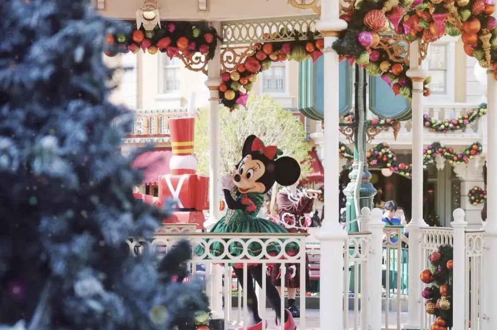
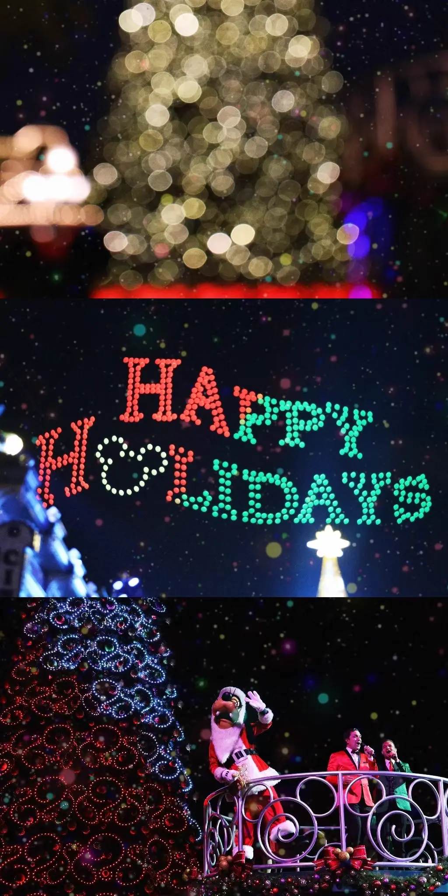
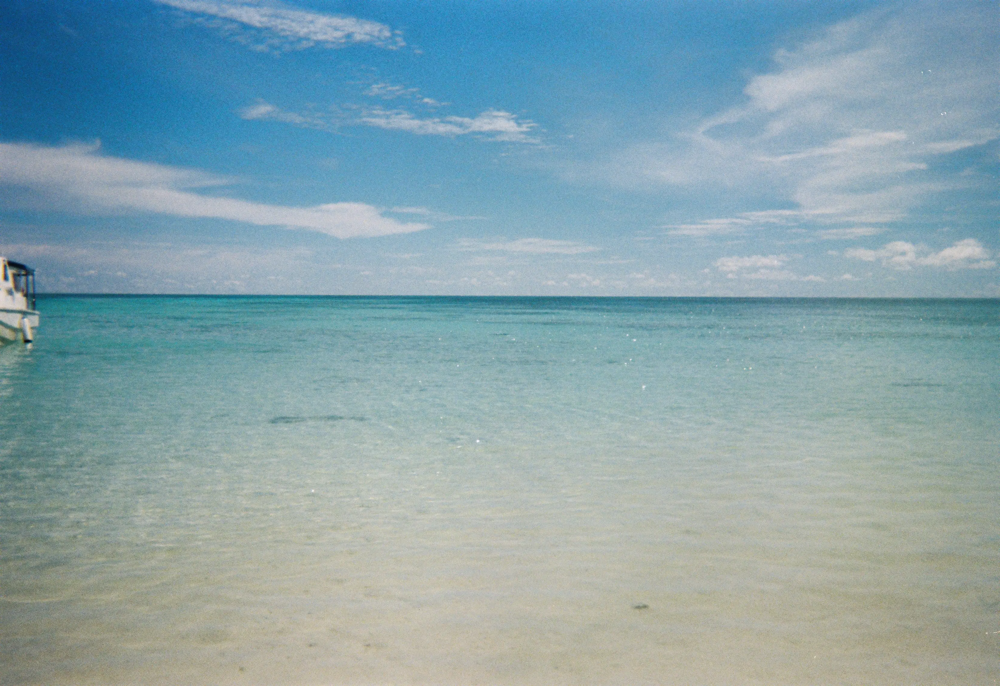
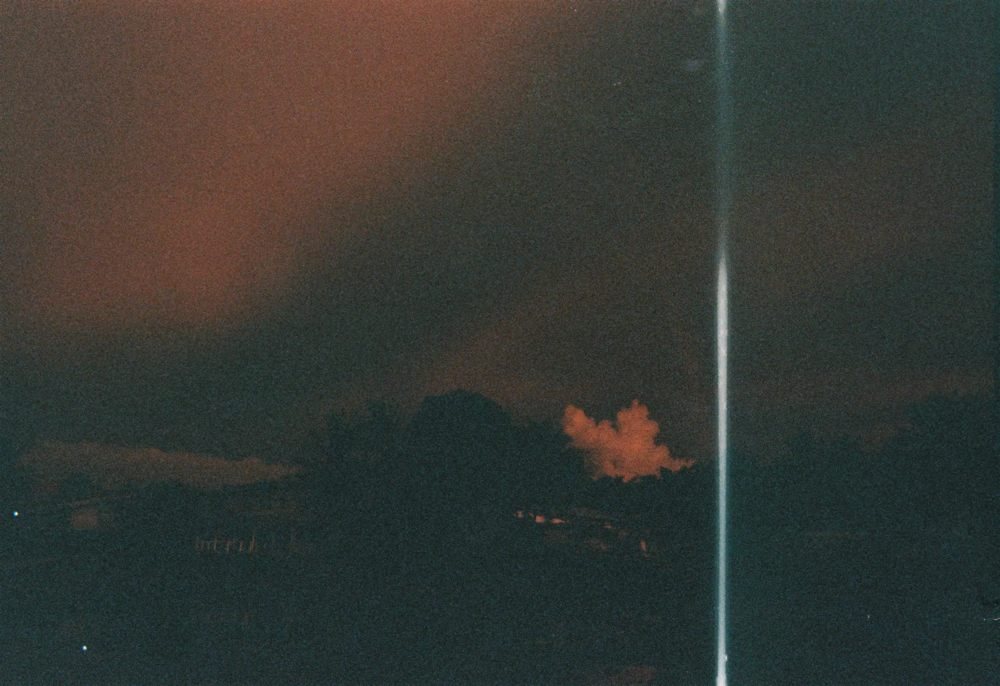
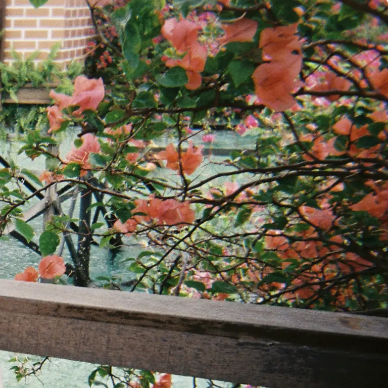
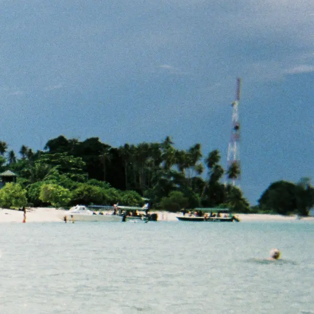
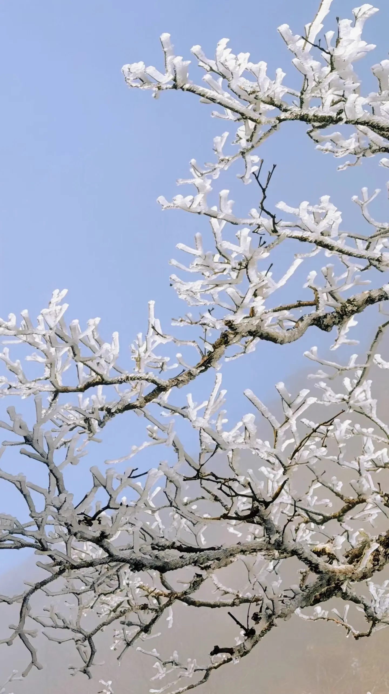
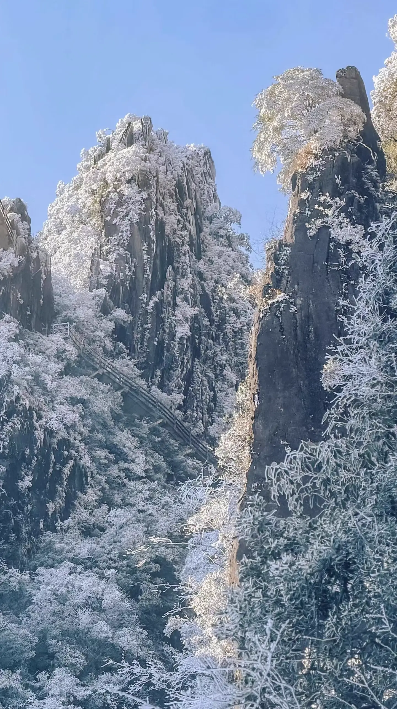

日常#10
香港迪士尼、莽山五指峰
🎵 Chet Baker (Live) - Mando Diao
2025 年圣诞和女朋友又去了一次香港迪士尼，趁着香港迪士尼 20 周年和圣诞节，去感受一下节日氛围。
之前也去过一次（香港迪士尼一日游），那时是国庆，人不少，但一天下来也玩了很多项目。这次去人更多了，每个项目的排队时间都很长，体验没有上次的好。
{kind=link}

{kind=link}

这次和米妮合了影，米妮很可爱！（虽然要排队一个多小时）; 看了魔法书屋，是一个结合了大屏幕和舞台表演的演出，如果去的话推荐一看；重玩了一次迷离大宅和魔雪奇幻之旅，没有第一次玩时的惊喜了，只剩下些许因为场景和失重带来的刺激，而且排队太花时间了；看了狮子王的演出，逛了一天比较累，演出感觉也一般，看得差点睡着了，不太推荐看；提前排队看了 20 周年的花车，阵容应该比平时大一些，因为在前排，也能看到在花车之间跳舞的人，他们看起来都充满了笑容，也会和两边的人互动，花车巡游还是蛮好看的；因为是圣诞节，乐园里摆了一棵巨大的圣诞树，看了点灯仪式，也蛮好看的，点灯之后还有人造雪花飘落，圣诞氛围很足；晚上的烟花因为是 20 周年，加入了一些无人机表演，但也延长了烟花表演的时间，要赶高铁也没时间看完。
这次去最惊喜的就是魔法书屋，其次就是花车和圣诞树点灯，其他都没啥时间玩，排队时间太长了，如果是打算玩项目的，还是淡季过来体验更好。如果下次再来香港迪士尼的话，项目我已经没什么想玩的了，可以多花点时间到处拍拍照，节奏更慢一点。
上次去的时候，相机没有闪光灯，在晚上拍照人很难拍清楚，这次买了补光灯和闪光灯，顺便去测试了下效果。补光灯比较容易控制，它是常亮的，可以调节亮度、色温，光线也相对柔和，对新手友好；闪光灯是一瞬间的白光，会让画面整体偏冷，需要考虑和人物的距离、焦距等去调节闪光强度，有一些上手门槛。两者都是给人物补光的，一个是持续的光，一个是瞬发的光，出来的画面各有特色，还要继续摸索一下怎么用。
这次还带了一台新买的 instax WIDE 400，是一款画幅大一些的拍立得。 WIDE 400 的优点是画幅大、相对便宜，缺点是无法主动开启闪光灯、无法主动加减曝光，导致它很容易曝光不足。有人为此做了一些配件，通过遮住测光孔和闪光测光孔，试图控制 WIDE 400 的闪光和曝光程度，但要用好也需要大量尝试去摸索，用起来还是有点麻烦。 WIDE 400 更适合在光照比较充足的场景使用。如果预算充足，WIDE 300 是更好的选择，它可以主动开启闪光灯、调节曝光强度，方便得多。
{kind=link}

买了很久的富士一次性胶片机也在这次游玩里拍完了，冲洗之后也有不少废片，发现一次性胶片机也是需要在光线充足的环境下用才好，暗光下的表现非常差。我在黄昏时分用它拍了一张风景，因为天色比较暗，冲洗出来基本啥也看不到。不过胶片的颗粒感、色彩颜色我蛮喜欢的，还想继续拍。
胶片在没有冲洗之前都是未知，无法预览，因为相对昂贵，也不会反复重拍，更有一种捕获瞬间的感觉，也让人对冲洗后的照片多了点期待，蛮好玩的。
{kind=link}

{kind=link}

{kind=link}

最近几年圣诞节，我都会组织几个朋友交换圣诞礼物，希望通过一个小小的活动增进彼此的联系。今年其中一个朋友结婚了，就送了富士的一次性胶片机，也许能让她记录一些瞬间。我收到了一套餐具和一个机械结构的计时器，计时器我还挺喜欢的，功能单一、不需要用电，通过旋转上发条就可以计时，还比较方便。和女朋友也进行了交换，因为她比较喜欢摄影，就送了补光灯和闪光灯，而她送了我一套雅诗兰黛的精华，坚持用或许脸上的皱纹会少点。
2026 的元旦参加了行走二十岁组织的莽山 2 日游。
第一天去了燕子岩，是一个比较大的溶洞，在那吃了顿午饭。饭吃着一般般，溶洞也没啥看的，估计是酒店没那么快能入住，所以安排在这个地方消耗点时间。
下午三四点去入住酒店，不知道是入住人太多，还是工作人员太少，我们住的房间等了好一段时间才清理好，体验不太好。
酒店的一大特色是温泉，有一个相当大的温泉区域，按照水温、形状、位置、颜色分成了很多池子。这是我第一次泡温泉，其实就是泡在 40 度到 45 度之间的热水里，水有一定的浮力，有点像海水。泡久了会热，甚至出汗，如果泡太久身体水分可能会流失很多，不能一次泡太久，也要适当补水。温泉池子大多在室外，夜里很冷又有风，我淋浴之后披了条浴巾就出去了，冻的我整个人都在抖，应该先找个室内池子泡暖了再出去的。各种各样的池子都去泡了泡，其实都大差不差，主要是温度和颜色上有一些变化。
第二天去「爬」莽山看雾凇，运气比较好，元旦降温，也下了点雨，山上起了雾凇。上山要坐一个很长的索道，大概 3700 多米，一路从平地不断爬升，越往上雾气越重，有段路周围都是白茫茫的，什么都看不见。如果在夏天来，应该可以俯瞰群山和树林，景色应该会不错。
很佩服莽山的修建，在海拔 1000 米的山上，架设了索道、在山壁上修建了栈道、两个电梯（摩天岭的有近 140 米高），让爬山如同逛公园一样轻松。
{kind=link}

{kind=link}

在山上能看到险峻的高山、大片的白雾、云海和雾凇。因为雾凇，植物都披了一层白色的外衣，蛮好看的。在有阳光的地方，雾凇透明闪亮，融化了也会不断掉落，像是下冰雹。
因为我们对走完一圈要多久没啥概念，一开始我们是走走停停，到处拍照，看到对面山上很高的地方有人在走，我们都以为不会走到那么高、那么远的地方（后面走着走着就走到了）。后面发现其他团友似乎都在我们前面，如果我们不快点，就会耽误所有人的回程了，看了地图发现我们才走了四分之一左右，这才开始加速。
因为对路线不熟悉，也有些急，过程中做了一些不太对的选择。
走到四分之一的地方，我们没有选择原路返回，而是顺着环线继续往前，如果着急集合的话，往回走显然是更快的。
走到摩天岭的时候，我们本来离电梯很近，但也是不熟悉路线，我以为不需要往上走，就把女朋友拉出了队伍，打算走旁边的步道继续赶路。打开地图看了半天，发现还是要往上走的，但这个时候等电梯队伍已经排得很长了，排队排也要很久，就硬着头皮从旁边的台阶往上走了。台阶上有冰，人也多，要是滑倒了还蛮危险。山上很冷，但台阶附近开始有阳光，爬台阶也很累，爬着爬着都出汗了。有点对不起女朋友，如果没从电梯队伍出来，或许早就上去了，轻松得多。让我意想不到的是，女朋友的体力还不错，爬得还蛮快。后来她告诉我，她当时也比较生气，但也因为生气而有一种把我甩在后面往上爬的狠劲。 _(:3 」∠)_
继续走到小天台的电梯，等电梯的队伍很长，本来打算走台阶下去，但台阶有冰，人也多，下山可能更容易滑倒，最后还是耐着性子等电梯。虽然等了不少时间，但也庆幸坐了电梯，电梯垂直下降了不少高度，走的话估计也要不少时间。
这个时候，大部队基本都在游客中心的大巴上等着了，而我们还没坐上下山索道。
一路快走和小跑，好不容易去到下山索道入口，又排起了长队，因为下山的人太多，开始了人流管控，等了不少时间才坐上下山索道。下了索道也全都是人，排着很长的队等摆渡车回游客中心，如果排队的话，回程肯定赶不上了。还好索道距离游客中心也就两公里，干脆就跑回去了，一路跑跑停停，终于是回到了游客中心，坐上了回程的大巴，整个过程真是相当的赶和着急。
后来看小红书，因为景区没有限流，任由游客上山，进入景区、买票、上山都要排队很久，下山也排了非常长的队伍，在山上又冷又累，不少人从四点多等到了八点多才终于下山。
这么看，我们还算是比较幸运，进入景区还算快，在刚开始管控的时候就下了山，回程也没耽误。
总的来说，莽山五指峰还是可以一去的，玩起来比较轻松，冬天还能看到雾凇。不过最好避开高峰期，实在要高峰期去就尽可能早点去。
元旦假期最后一天，还去了一趟朋友的婚礼，也就是上面提到的那位结婚的朋友。那几个交换圣诞礼物的朋友，都是小学时候的同学了，有的高中时也是同学，虽然一开始我不是全部都认识，但是朋友的朋友也变成了我的朋友，最终我们几个都成为了要好的朋友。这位结婚的朋友，是我们几个中结婚最早的，祝她幸福。
趁着这次婚礼，几个人又见了一面，拍了几张拍立得各自留念。尽管如今交通便利，彼此也相隔不远，想要聚一起见面其实不难，但一年下来也很少能聚一起，希望今年春节大家还能再见一面。